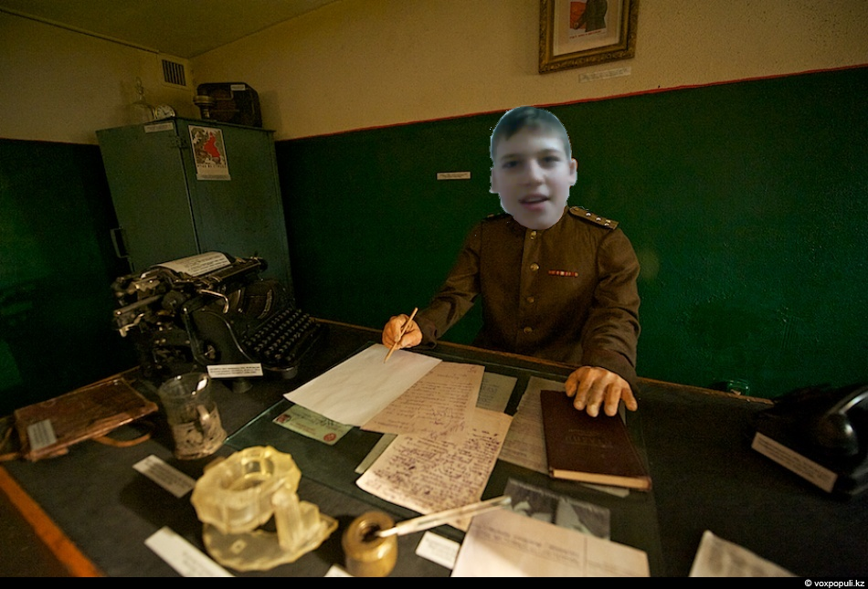

Черниенко потратит 10 миллионов долларов на восстановление саранска! Три батальона успешно справляются!
Двадцать седьмого февраля в Саранск, где находится главный штаб сториес оф зу мун прибыло три военных батальона Центра моддинга на войну с Древними кабанами. Хочется напомнить что один батальон центра моддинга прибыл на место проишествия девятнадцатого февраля, однако был разгромлен и провалил задачу.
Пока что недавно прибывшие батальоны хорошо держатся, и справляются со своей задачой, они пока что потеряли 36 человек. 3 февраля должно прийти подкрепление из шести батальонов, также Черниенко заявил на собрание по поводу чс в Саранске о том что потратит на восстановление города 10 миллионов долларов и приедет в сам Саранск, чтобы посмотреть как там дела и поприветствовать народ.
Из гражданских лиц погибло 58904328 человек по авторитетным источникам
 Черниенко издаёт указ